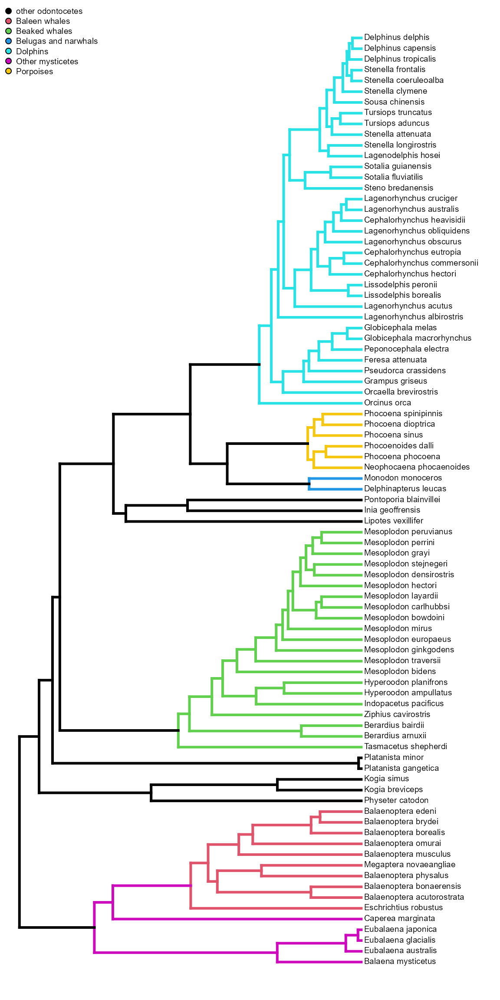
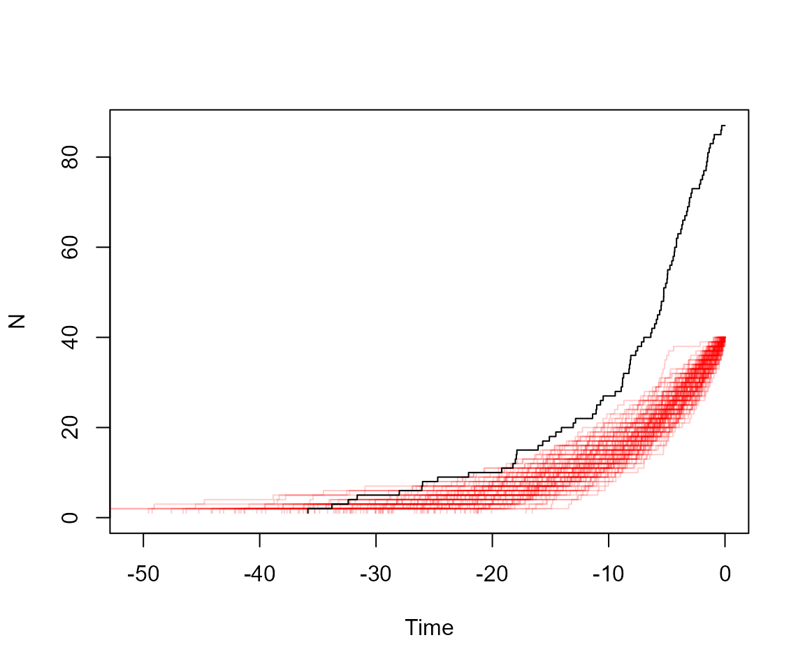

Phylogenies and diversification
Matheus Januario and Jennifer Auler
Dec/2023
Source:vignettes/phylogenies_and_diversification.Rmd
phylogenies_and_diversification.RmdMolecular phylogenies:
Using data on molecular variation of multiple species, we can build and date a molecular phylogeny. For instance, we can look at the whale phylogeny:
data("whale_phylo")We could check the “plain” phylogeny with the following code:
But for this particular phylogeny, we have a build-in function that help visualize some subclades:
plotPaintedWhales(knitr = TRUE)## no colors provided. using the following legend:
## 1 Baleen whales Beaked whales
## "black" "#DF536B" "#61D04F"
## Belugas and narwhals Dolphins Other mysticetes
## "#2297E6" "#28E2E5" "#CD0BBC"
## Porpoises
## "#F5C710"
Now we will visualize lineage-through-time (LTT) plots for this phylogenetic tree. The LTT plots contain a lot of information about phylogenetic tree structure, for instance they tell a lot about the shape of trees produced by different speciation and extinction rates.
lttPlot(whale_phylo, knitr = T)
Ok, but how does this plot stores info about the phylogeny?
Diversification
To figure this out students can use the pure-birth (=“Yule”) model, which predicts that the same rate can generate a very large number of species. To show this first we estimate the speciation (i.e., the birth rate)
whalerate = estimateSpeciation(whale_phylo)Because we know whale originated ~36 million years ago, we can simulate many alternative diversification scenarios, following the parameters we estimated:
sims=vector()
for(i in 1:10000){
sims = c(sims, simulateBirthDeathRich(S = whalerate, E=0, t = 36))
}
hist(sims, breaks = 100)
Now we know that the Yule model can generate many species. Let’s check the LTT’s that this model can generate:
t = simulateTree(c(whalerate, 0), max.taxa = 40, max.t = Inf)
ape::ltt.plot(t, col="white", ylim=c(0,87))
for(i in 1:100){
t = simulateTree(c(whalerate, 0), max.taxa = 40, max.t = Inf)
ape::ltt.lines(t, col="#FF000032")
}
#Now, we add the actual whale phylogeny:
ape::ltt.lines(whale_phylo, col="black")
So the empirical phylogeny is very different from the simulated. What hypotheses can students make to explain this discrepancy?
Maybe is because the Yule model is too simplistic (i.e., model has no
extinction at all)? We can test this, for instance by replacing the
estimateSpeciation() function by thefitCRBD(),
and then re-do our simulations, with an extra layer of complexity.